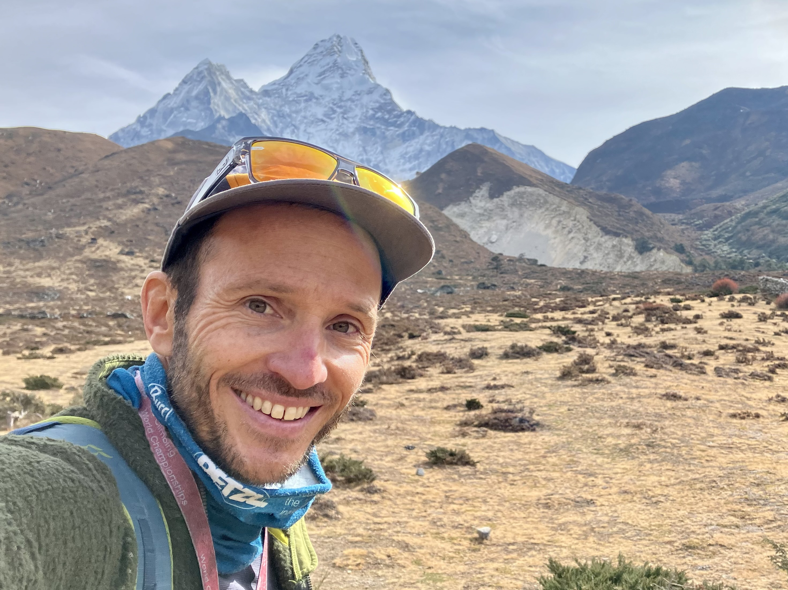
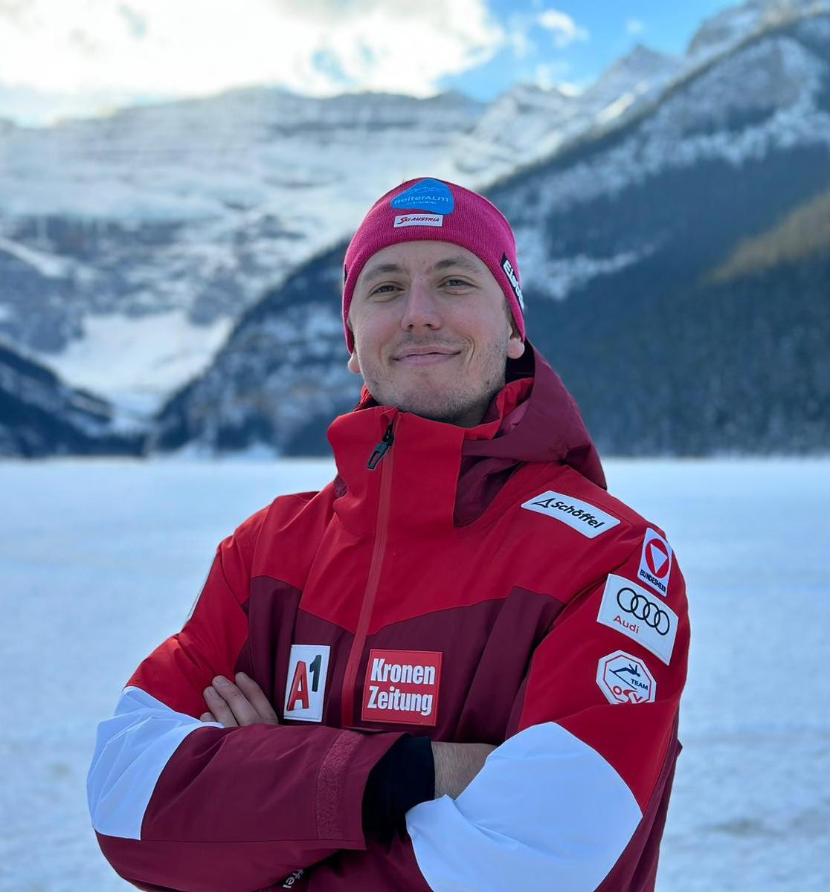
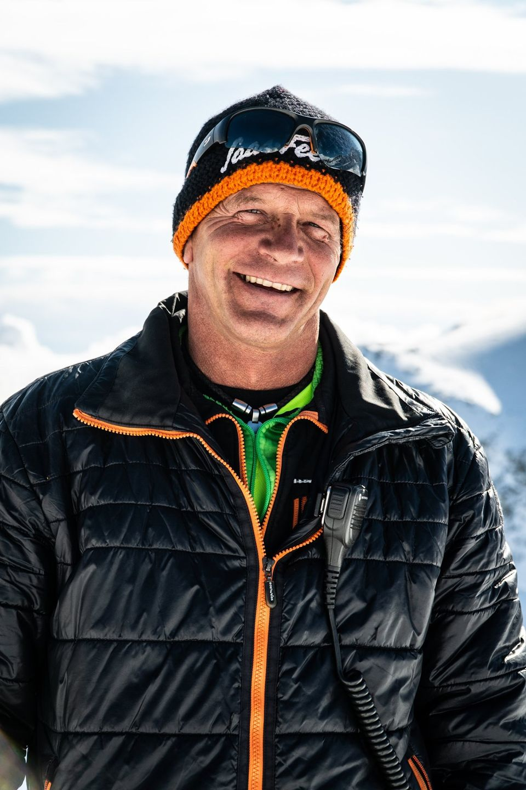
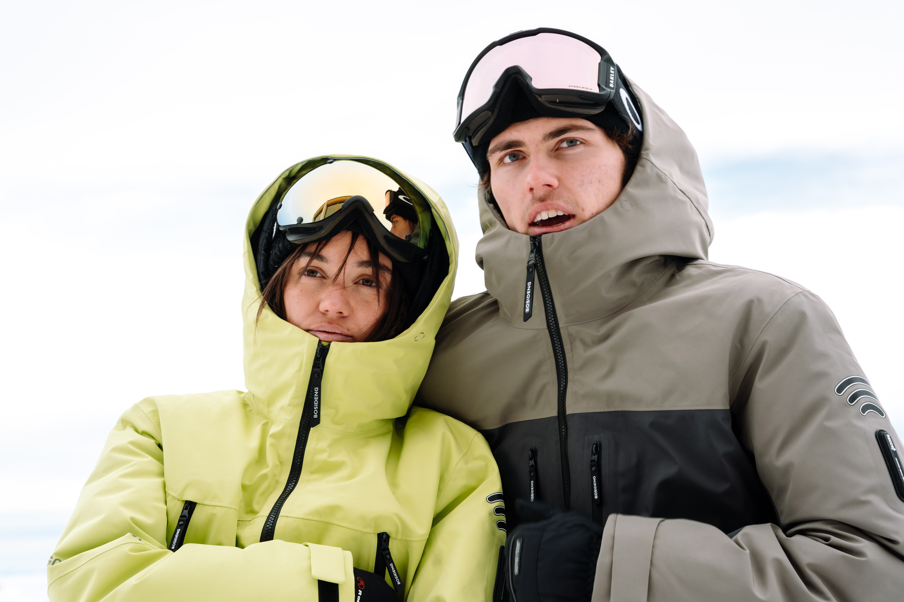

Marc Amann, gebürtig aus Deutschland, ist ein leidenschaftlicher Schneesportfotograf, der vor fünf Jahren
den Schritt in die Schweiz wagte und dort seine kreative Heimat fand. Mit einem Auge für atemberaubende
Aufnahmen hat er seine Passion für den Wintersport zu seinem Beruf gemacht.

Gabriel Voide
Gabriel Voide hat mit bewundernswerten 16 Jahren die Ausbildung zum Bergführer abgeschlossen und lebt
seitdem leidenschaftlich seine Berufung aus. Geboren und aufgewachsen im schweizerischen Saas-Fee, einem
malerischen Bergdorf in den Alpen, war die umgebende majestätische Kulisse seiner Heimat wohl ein
katalysierender Faktor für seine Begeisterung für das Bergsteigen.

Julian Schütter
Julian Schütter ist nicht nur ein herausragender alpiner Skirennfahrer in der österreichischen
Nationalmannschaft, sondern auch ein engagierter Klimaaktivist, der seine Popularität und Leidenschaft
für den Sport nutzt, um auf Umweltthemen aufmerksam zu machen.

Berthold Hegner
Berthold Hegner, als Pistenchef bei den Bergbahnen Saas-Fee tätig, ist eine zentrale Figur in der
Gewährleistung einer sicheren und optimalen Skierlebnisumgebung in einem der renommiertesten Bergresorts
der Schweiz. Mit einer beeindruckenden Karriere in der Bergbahnen-Industrie hat Berthold nicht nur
umfangreiche Erfahrung gesammelt, sondern auch eine tiefe Leidenschaft für die alpine Umgebung entwickelt.
THE STORY
Unsere faszinierende Reise durch die Welt der Gletscher begann mit einer tiefen Erkenntnis: Gletscher sind nicht bloß beeindruckende Landschaftsmerkmale, sondern auch essenzielle Indikatoren für den Klimawandel. Diese Erkenntnis trieb uns an, nicht nur die schiere Schönheit dieser gefrorenen Welten einzufangen, sondern auch die bewegenden Geschichten der Menschen zu erzählen, die ihr Leben den extremen und eisigen Umgebungen dieser majestätischen Landschaften gewidmet haben.
Die Auswahl unserer Protagonisten erfolgte mit größter Sorgfalt, da wir nach Persönlichkeiten suchten, die nicht nur eine tiefe Verbindung zu den Gletschern haben, sondern auch über einzigartige Einblicke und Geschichten verfügen. Wir wollten Menschen vorstellen, die nicht nur Zeugen, sondern auch Akteure im Schutz dieser empfindlichen Ökosysteme sind.
Der Dreh selbst war eine kraftvolle Erfahrung, die uns tief in die Herzschläge der Gletscher führte. Unsere Teams arbeiteten unter extremen Bedingungen, von eisigen Gipfeln bis zu schneebedeckten Tälern, um authentische Einblicke in das Leben unserer Protagonisten zu gewinnen. Die Herausforderungen des Drehs spiegelten die Herausforderungen wider, vor denen diese Menschen täglich stehen – sei es als Bergführer, Fotografen oder Umweltaktivisten.
Seit unserem ersten Kontakt mit den Protagonisten hat sich viel verändert. Die drängenden Anliegen des Klimawandels sind noch akuter geworden, und die Geschichten unserer Helden sind relevanter denn je. Ihre Bemühungen, die Öffentlichkeit für den Schutz der Gletscher zu sensibilisieren, haben an Bedeutung gewonnen, und ihre individuellen Kämpfe spiegeln die globalen Herausforderungen wider, denen wir gegenüberstehen.
Mit jedem Blick auf die eindrucksvollen Aufnahmen und den mitreißenden Erzählungen unserer Protagonisten hoffen wir, nicht nur die Schönheit der Gletscher zu vermitteln, sondern auch ein Bewusstsein für ihre Verletzlichkeit und die Notwendigkeit ihres Schutzes zu schaffen. Unsere Reise geht weiter, denn wir sind fest davon überzeugt, dass diese Geschichten die Kraft haben, Veränderungen anzustoßen und die Welt dazu zu bewegen, sich für den Erhalt unserer wertvollsten Naturwunder einzusetzen.
THE CREATORS

Katharina Bumann und Dominik Bolsinger
In den kreativen Händen von Katharina Bumann und Dominik Bolsinger entfaltet sich eine fesselnde Dokuserie
über Gletscher und den Winter, die nicht nur visuell beeindruckt, sondern auch tiefe Einblicke in die
Welt der Menschen bietet, die diese beeindruckenden Umgebungen ihr Zuhause nennen. Als passionierte
Schneesportler schöpfen die beiden nicht nur aus ihrem technischen Know-how, sondern vor allem aus ihrer
persönlichen Verbindung zu den Bergen und der Natur.
Katharina Bumann und Dominik Bolsinger bringen nicht nur ihr technisches Know-how in die Produktion ein, sondern schöpfen auch aus ihrer leidenschaftlichen Bindung zu den Bergen und der Natur. Als engagierte Schneesportler sind sie nicht nur Beobachter, sondern Teil dieser atemberaubenden Landschaften. Diese persönliche Verbindung spiegelt sich in ihrer Arbeit wider und verleiht der Dokuserie eine authentische und empathische Perspektive.
Die Dokumentarfilmer setzen nicht nur auf ästhetische Brillanz, sondern auch auf die Kraft der Geschichten, die von den Menschen erzählt werden, die in diesen extremen Umgebungen leben. Durch ihre künstlerische Herangehensweise schaffen Bumann und Bolsinger eine Plattform, um die Schönheit der Natur zu zelebrieren und gleichzeitig die Herausforderungen und Geschichten derjenigen zu teilen, die sich entschieden haben, in solch beeindruckenden, aber oft auch anspruchsvollen Regionen zu leben. Ihr Werk steht somit für eine tiefe Wertschätzung der Natur und der Gemeinschaften, die in diesen fragilen Ökosystemen existieren.
SWISS GLACIERS
Die schweizerischen Gletscher, einst majestätische Zeugen der eisigen Pracht der Alpen, stehen heute im
Fokus eines alarmierenden Rückgangs. Die schwindende Gletscherlandschaft in der Schweiz ist eine direkte Folge
des globalen Klimawandels. Die steigenden Temperaturen haben dazu geführt, dass diese eisigen Riesen in den
letzten Jahrzehnten dramatisch geschrumpft sind.
Während die schweizerischen Gletscher einst als stabile Naturmerkmale galten, erleben sie nun einen
bedenklichen Rückzug. Dieser Prozess hat nicht nur Auswirkungen auf die beeindruckende alpine Kulisse,
sondern auch auf das Ökosystem, die Wasserversorgung und den Tourismus. Die schwindenden Gletscher dienen als
visuelle Mahnung an die drängende Notwendigkeit globaler Anstrengungen zur Bekämpfung des Klimawandels und
zum Schutz unserer natürlichen Ressourcen.
Folgend haben wir ein Diagramm erstellt, welches den dramatischen Verlust an Gletschermasse über die
letzten Jahre eindrücklich visualisiert und einen Ausblick auf die zu erwartende Entwicklung in den
kommenden Jahren gibt. Es ist wichtig, dass wir uns dieser Realität bewusst werden und gemeinsam daran
arbeiten, nachhaltige Lösungen zu finden, um den weiteren Verlust unserer wertvollen Gletscher zu verhindern.
DONATION
Mit unserer Dokuserie über Gletscher und den Winter haben wir nicht nur das Ziel, die atemberaubende
Schönheit dieser Naturwunder zu dokumentieren, sondern auch einen positiven Beitrag zum Umweltschutz zu
leisten. Aus diesem Antrieb heraus haben wir eine Spendenaktion ins Leben gerufen, um finanzielle Mittel
für den Klimaschutz und den Erhalt der schweizerischen Gletscher zu sammeln.
Unsere Spendenkampagne ist darauf ausgerichtet, die Aufmerksamkeit auf die bedrohten Gletscher der Schweiz zu
lenken und gleichzeitig die Gemeinschaft dazu zu mobilisieren, aktiv zum Umweltschutz beizutragen. Die
gesammelten Gelder fließen direkt in Initiativen und Organisationen, die sich dem Klimaschutz und dem Schutz
der schweizerischen Gletscher widmen.
Die Spenden werden dazu verwendet, umweltfreundliche Projekte zu fördern, Forschung im Bereich der
Gletscherökologie zu unterstützen und Maßnahmen zur Anpassung an den Klimawandel zu finanzieren. Unser Ziel
ist es, gemeinsam mit unserer Community einen nachhaltigen Beitrag zu leisten und einen Teil der finanziellen
Mittel, die wir durch die Dokuserie generieren, wieder in den Erhalt der Natur zu investieren.